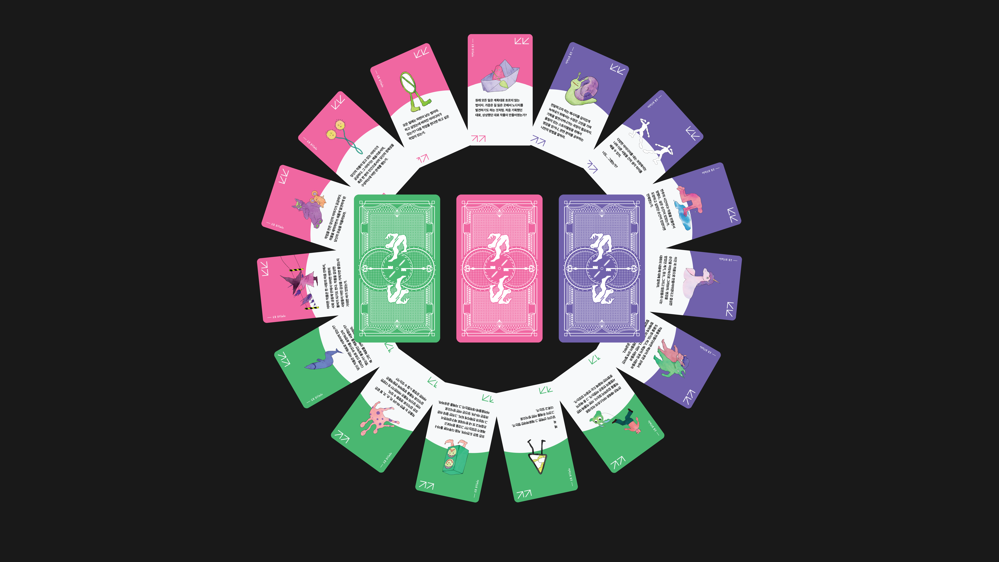
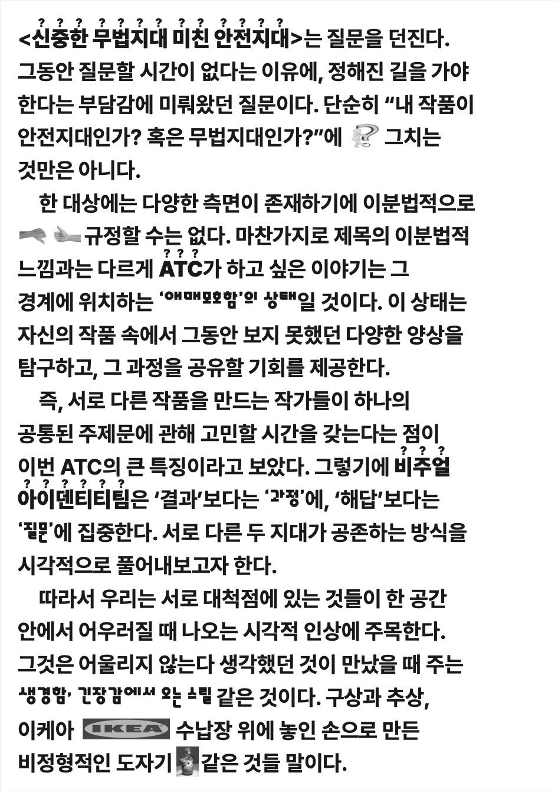
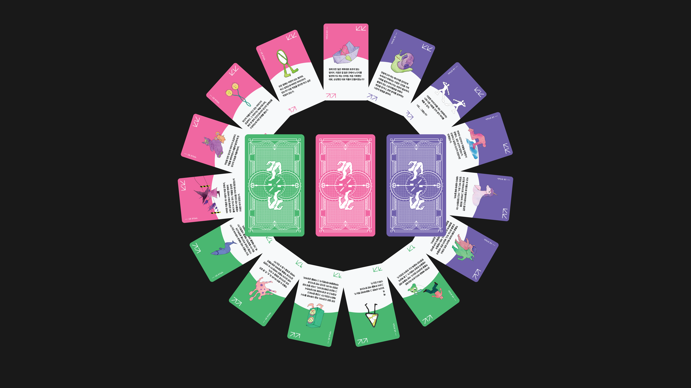
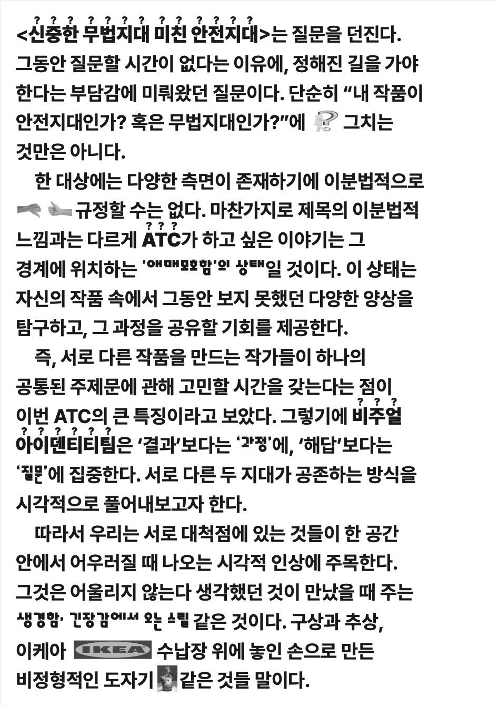

2023 ATC : 신중한 무법지대, 미친 안전지대
2023 ATC는 사회를 효율적이고 편한 방식으로 뒷받침하는 안전지대와 불안하지만 다채롭고 자유로운 무법지대의 개념을 제시하며 우리가 서있는 안전지대를 넘어 무법지대로 나아가자고 제안합니다. 주목받지 못했던 경계 밖의 대상들과 그들의 가능성에 대한 질문을 던집니다.
이러한 메시지를 시각언어로 전달하기 위해 다양성과 이동성을 표현하는 데 집중하였고, 가장 모호한 경계선에 걸친 지대를 뭉뚱그려진 타이포그래피로 나타냈습니다. 또한 두 지대 간의 경계가 흐려져 다양한 형태를 가진 개체들은 흩어지고 재조합되기를 반복하는 이동성의 잠재력을 가지며, 그의 과정은 흔적으로 남아 기록됩니다.